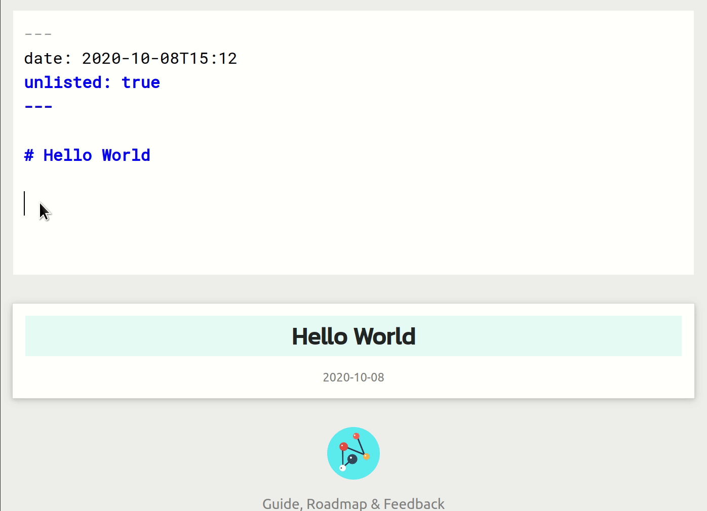
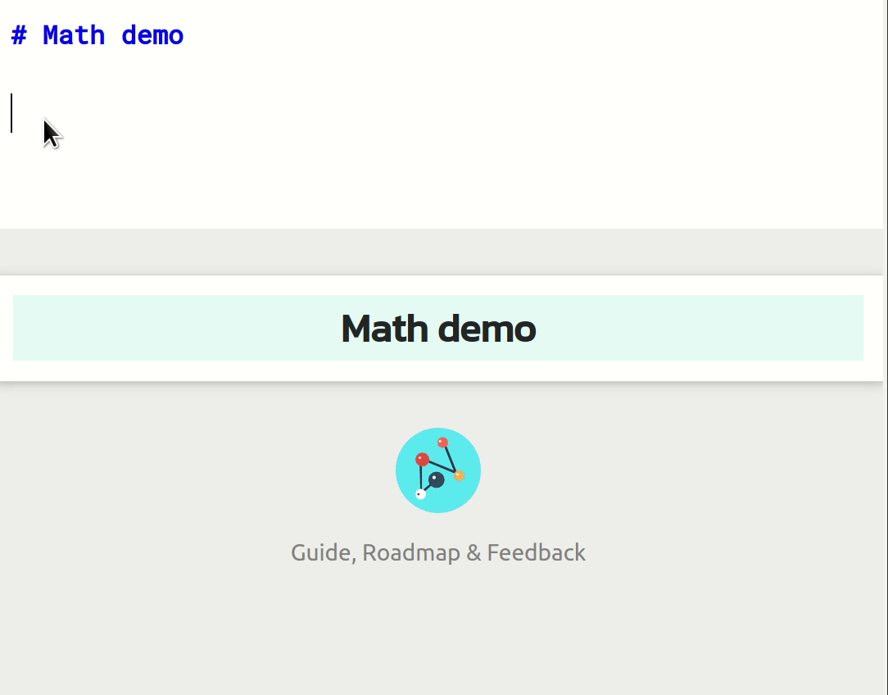

Neuron 1.0 released
Neuron (GitHub repo) is a note-taking tool based on Zettelkasten, that aims to be future-proof, and is optimized for publishing on the web. Version 1.0 just got released, with better linking support and many other improvements.
Better Linking
Neuron now supports wiki-links, the same syntax used by other software like Zettlr and Obsidian. If your note file is named “neuron-v1.md”, you can link to it using [[neuron-v1]]. Regular Markdown links also now works as they should – for example, [Neuron v1.0 released](neuron-v1.md) works exactly like the wiki-link syntax in that it will be recognized as a Zettelkasten connection.

Finally, neuron allows arbitrary title in the note filename. For example, you can start writing a note saved in the file Neuron v1.0 released.md, and link to it from other notes as [[Neuron v1.0 released]]. This is called a title ID. The title of the note is automatically inferred from this filename, unless of course you explicitly specify one in the body of the note (which title ID obviates).
Git-like CLI
Previous versions of neuron required you to pass an explicit -d argument when working on multiple notebooks. This is now obviated by adopting a Git-like CLI interface, wherein neuron will treat the current directory as your notebook without a -d argument.
Static binaries
Some users do not wish to install Nix, and they requested static binaries. We now have a static binary1 for neuron, albeit only for Linux.
Other improvements
Other notable changes include:
- Inline tags: You can inline your tags in your notes, so writing
#foowill automatically tag the note with “foo”. - Better unicode support: Now filenames are also unicode-aware. You can write in
计算机.mdand then link to it as[[计算机]]. - Custom JavaScript: Insert custom JavaScript or head HTML in generated site by adding a
head.htmlfile to your notebook. Users use this to do anything from using a different Math library (KaTeX) to adding a navigation bar. - All backlinks: Backlinks panel now shows all backlinks (including folgezettel)
- .. and more
See the release notes for a full list of changes.
Cerveau
Cerveau, the web app for neuron, is now officially out of public beta. Since the public beta (announced at Cerveau: a future-proof web app for notes), the following improvements were made:
- MathJax Live Preview (see below)
- WikiLink autocomplete (see above)
- Tag pages
- Other UX improvements

Future of neuron
Now that version 1.0 is released, I see two major focus-areas for future-proof open source note-taking – performance & extensibility. Performance is important for especially large Zettelkastens (think - over 50000 notes), and extensibility enables us to keep neuron’s core small and simple, while allowing users to enrich their notebook with interesting features (eg: flash cards, task management, self-tracking, Pandoc filters) without complicating neuron itself.
To achieve this, I’m working on a new (independent) core for neuron, called ka (named after the Egyptian concept) that eventually will supplant rib/shake used currently in neuron. ka uses Functional Reactive Programming to provide a reactive build pipeline2 specifically geared towards note-taking, as well as plugin mechanism to customize the behaviour of the application at various stages.
If you enjoy using neuron and/or Cerveau, and would like to show your appreciation, you might be interested in the GitHub sponsor goal that will enable the eventual open-sourcing of Cerveau, a full-stack Reflex FRP app.
The static binaries are built using Nix itself; see Building Static Haskell binaries using Nix.
↩︎See this blog post which details using Reflex FRP as build engine in ghcide.
↩︎